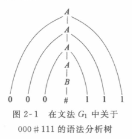
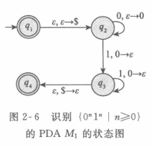

第 2 章 上下文无关文法
上下文无关文法（context-free grammar, CFG），能够描述某些应用广泛的具有递归结构特征的语言。
2.1 上下文无关文法概述
A→0A1
A→B
B→#
- 变量：A,B
- 终止符：0,1,#
- 起始变元：A
获取一个字符串的替换过程叫派生。
例如字符串 000#111 的过程如下：
A⇒0A1⇒00A11⇒000A111⇒000B111⇒000#111
可用语法分析树更加形象地描绘这一派生过程。

用 L(G1) 表示文法 G1 的语言，可以看出 L(G1)={0n#1n∣n≥0}。
能够用上下文无关文法生成的语言称为上下文无关语言（CFL）
2.1.1 上下文无关文法的形式化定义
上下文无关文法是一个 4 元组(V,Σ,R,S)，且
- V 是一个有穷集合，称为变元集。
- Σ 是一个与 V 不相交的有穷集合，称为终结符集。
- R 是一个有穷规则集，每条规则由一个变元和一个由边缘及终结符组成的字符串构成。
- S∈V 是起始变元。
2.1.3 设计上下文无关文法
为得到语言 {0n1n∣n≥0}∪{1n0n∣n≥0} 的语法，先构造语言 {0n1n∣n≥0} 的文法
S1→0S1∣ε
和语言 {1n0n∣n≥0} 的文法
S2→1S20∣ε
然后加上规则 S→S1∣S2，得到所求的文法：
S→S1∣S2
S1→0S1∣ε
S2→1S20∣ε
化繁为简，利用正则，考察字串，利用递归。
任何正则语言都可以用 CFG 描述。
- 如果 δ(qi,a)=qj，则增加规则 Vi→aVj
- 如果 qi 是接收状态，则增加规则 Vi→ε
- 如果 q0 是起始状态，则 V0 是起始变元。
2.1.5 乔姆斯基范式
A→BC
A→a
其中，a 是任意的终结符，A、B 和 C 是任意的变元，且 B 和 C 不能是起始变元。此外，允许规则 $S\to \varepsilon $，其中 S 是起始变元。
2.2 下推自动机
下推自动机（pushdown automata）（PDA）
PDA = NFA + 栈（无限）——在控制器的有限存储量之外提供了附加的存储，使得 PDA 能够识别某些非正则语言。
能力上与上下文无关文法等价——在证明一个语言是上下文无关的时候有两种选择：
- 给出生成他的上下文无关文法。
- 给出识别它的 PDA。
2.2.1 下推自动机的形式化定义
下推自动机是一个 6 元组 (Q,Σ,Γ,δ,q0,F)，这里 Q,Σ,Γ 和 F 都是有穷集合，并且：
-
Q 是状态集。
-
Σ 是输入字母表。
-
Γ 是栈字母表。
-
$\delta:Q\times \Sigma_\varepsilon\times\Gamma_\epsilon\to\mathcal{P}(Q\times\Gamma_\varepsilon) $ 是转移函数。
-
q0∈Q 是起始状态。
-
F⊆Q 是接收状态集。
2.2.2 下推自动机举例
语言 {0n1n∣n≥0}，NFA 无法识别，但是 PDA 可以。

令 M1=(Q,Σ,Γ,δ,q1,F)，其中：
-
Q={q1,q2,q3,q4}
-
Σ={0,1}
-
Γ={0,$}
-
F={q1,q4}
δ 由下表给出，表中空白项表示 ∅:
| 输入 |
0 |
1 |
ε |
| 栈 |
0 |
$ |
ε |
0 |
$ |
ε |
0 |
$ |
ε |
| q_1 |
|
|
|
|
|
|
|
|
{(q_2,$)} |
| q_2 |
|
|
{(q_2,0)} |
{(q_3,ε)} |
|
|
|
|
|
| q_3 |
|
|
|
{(q_3,ε)} |
|
|
|
{(q_3,ε)} |
|
| q_4 |
|
|
|
|
|
|
|
|
|
2.2.3 与上下文无关文法的等价性
PDA 与 CFG 之间的等价性：如果一个语言是上下文无关的，则存在一台下推自动机识别它。